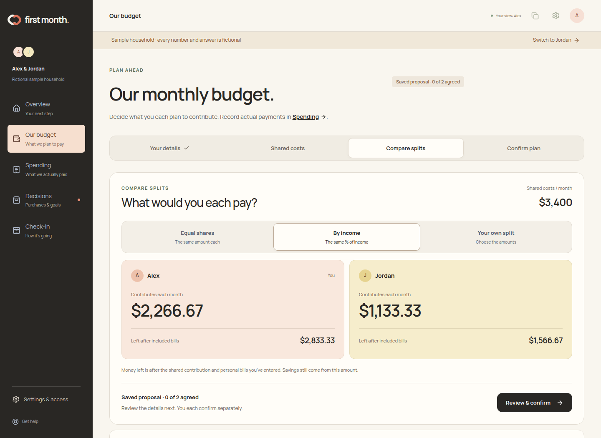
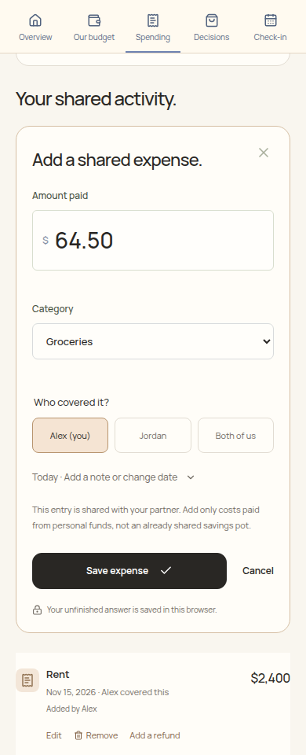
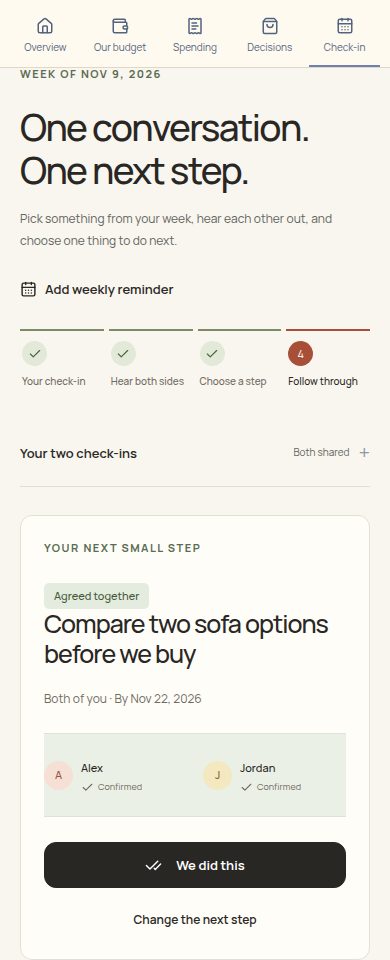

Что считаем общим?
Аренда, продукты, покупки
для дома — и личные расходы,
которые
остаются личными.
Договориться, кто сколько вносит.
И сохранить договорённость
в
повседневной жизни.
США · 25–45 лет · B2C · веб-продукт
first-month-six.vercel.app ↗
У пары впереди первый общий месяц. Нужно согласовать больше, чем процент.
Аренда, продукты, покупки
для дома — и личные расходы,
которые
остаются личными.
Одинаковый взнос по-разному
влияет на людей с разными
доходами
и обязательствами.
Кто оплачивает счёт, когда
переводить деньги и что делать,
если
расходы изменились.
Фактические расходы, возвраты,
подтверждение переводов и
итог месяца.
Сравнение покупок и сроков накопления
с учётом уже
принятых обязательств.
Два мнения превращаются в одно
действие: что сделать,
кому и когда.


Общий план меняется вместе с жизнью пары.
Кто заплатил и как это
соотносится с планом.
Выбрать тему и договориться
об одном следующем шаге.
Проверить расходы
и переводы между собой.
Сохранить условия.
Добавить новые расходы.
Поддерживать договорённости вдвоём:
общие расходы, покупки и регулярный пересмотр.
Расчёты в целых центах.
Отдельные права двух участников.
Изменение
условий сбрасывает согласие.
Повторная отправка не дублирует
расход.
Groq · openai/gpt-oss-120b
Три
вопроса и начало разговора.
Общий контекст;
структурированные
суммы доходов и расходов не передаются.
Плюс браузерные сценарии двух ролей,
сборка и проверка чистой
установки.
Совместное управление бюджетами
для близких людей в рамках
одной
подписки.
Бюджет пары, подключение счетов,
ИИ-посредник и
еженедельные
сводки.
Сравнить условия до оплаты,
получить два подтверждения
и
вести их выполнение.
Личные ответы → понятные последствия →
согласие обоих → реальные расходы.
Данные BLS за 2025 год.
Широкий контекст для будущего
расширения,
не оценка доступных клиентов First Month.
Столько платящих домохозяйств потребуется
при гипотезе цены
$10 в месяц.
Готовность платить пока не проверена.
Первое сравнение — бесплатно.
Платная гипотеза —
постоянная
совместная работа с бюджетом.
Иллюстративные допущения, не фактические показатели
Целевой CAC ≤ $30 → LTV/CAC ≥ 3,3.
При оттоке 15% LTV
падает до ≈ $53.
Поисковые гайды о расходах при переезде
→ бесплатное
сравнение → приглашение партнёра
→ подтверждённый план →
повторный месяц.
Демо можно пройти одному:
переключитесь между Alex и Jordan.